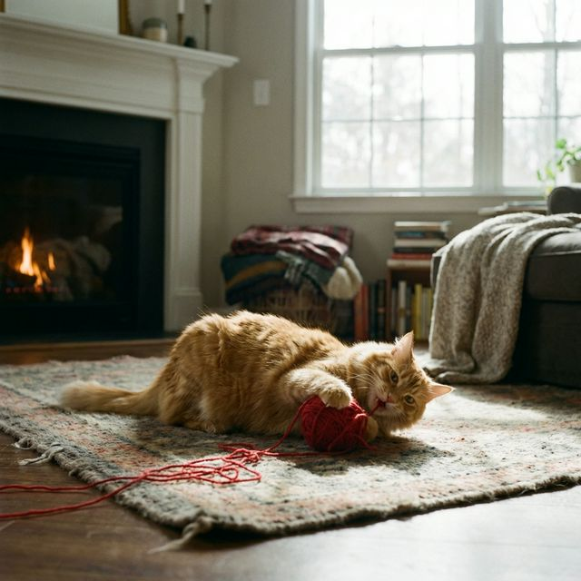
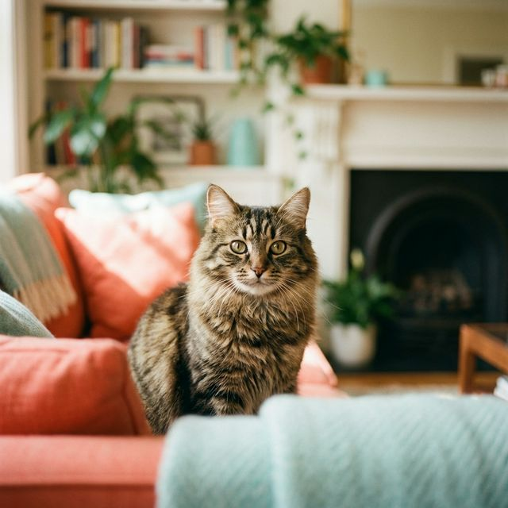
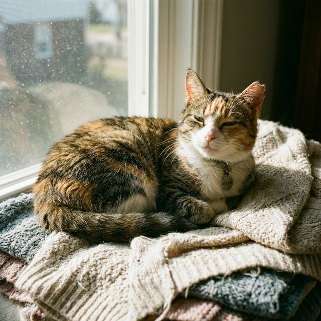
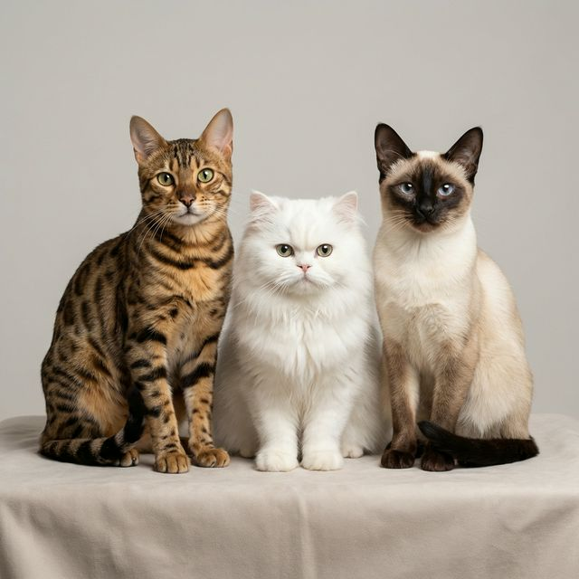

Nutrición
Seco vs Húmedo
Las ventajas de combinar ambos tipos de alimento para una hidratación óptima.


Las ventajas de combinar ambos tipos de alimento para una hidratación óptima.

Nutrición crítica para los primeros meses de vida y crecimiento saludable.

Cómo ajustar la dieta para gatos mayores y sus necesidades cambiantes.
Mantener las vacunas al día es esencial para prevenir enfermedades graves como la leucemia felina.
Si notas letargo extremo, dificultad al respirar o falta de apetito prolongada, acude al veterinario.
Llamar Ahora